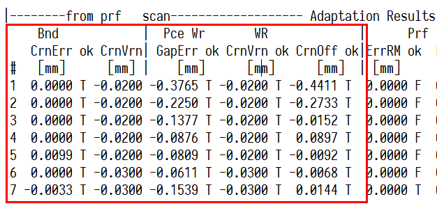

SSU日志验算¶
日志验算和说明。
开头¶
Int H w和Fin H w¶
--- Profile ---这一栏当中的 “H w” 指的是加了凸度自学习量的目标凸度。Int H w为初始的prf，Int H w为最终的prf。Int H w的计算过程如下所示。
1 | prf_int = (pdi_prf + prf_op_off) * matl_exp_cof + prf_vrn; |
热膨胀系数可以忽略不计，那么Int H w就是PDI的凸度、操作工补偿的凸度、凸度自学习的和。

在板形模型目标初始化阶段，prf_vrn会被赋值为prf_vrn_rm和prf_vrn_rs的差（prf_vrn_rs常年为零）。从实际数据来看，prf_vrn_rm和prf_vrn_rs的差，与Vrn还是存在差距的，说明这里的Vrn在实际计算中还会出现变化。（可能存在板形问题？）
中间坯凸度插值计算¶
中间坯的凸度，在模型计算中为插值计算。
辊系凸度¶
工作辊辊系凸度pce_wr_cr的验算¶
工作辊辊系凸度pce_wr_cr在日志中的标识为Pce WR Gap，如下图所示。

pce_wr_cr由五部分组成，分别是
- 带钢-工作辊磨损pce_wr_w_cr
- 带钢-工作辊热胀pce_wr_t_cr
- 工作辊辊形等效凸度wr_grn_cr
- 工作辊凸度自学习wr_cr_vrn
- 工作辊凸度补偿wr_cr_off
把这五部分加起来就是pce_wr_cr的值。
工作辊凸度补偿的验算¶
用长期遗传的工作辊凸度补偿cSLFG_wr_crn_off（对应日志中的SLFG WR Offs）和SPRP中的工作辊凸度补偿系数cSPRP_wr_crn_off_adj相加，即可获得工作辊凸度补偿wr_cr_off。

中间坯有效单位凸度¶
中间坯不存在应变差的概念，中间坯的单位凸度就是中间坯的有效单位凸度。
--- Transfer Bar ---中有每卷带钢的中间坯凸度Prof，由模型插值计算获得；以及中间坯的厚度，R2出口测量获得。可以通过凸度求厚度的商，作为中间坯的有效单位凸度，其值与--- Allocation Results (1st Iter.) ---这一栏中的零道次pass0的EF PU Prf对应。中间坯凸度值与--- Allocation Results (1st Iter.) ---这一栏中的零道次pass0的Prf值对应。

单位宽度轧制力的验算¶
单位宽度轧制力，直接拿轧制力除以带钢精轧宽度，由于受到限幅，一般单位轧制力的值是真正被限幅后的值。注意这里的精轧宽度指的是中间坯在F1入口的宽度，不是订单宽度也不是目标宽度。
所以，单位轧制力包络线的最大值、单位轧制力包络线的最小值，以及-- Allocation Requirements (1st Iter.) --这一栏中的单位轧制力分配结果一般三者在各自机架内都相等。
带钢弹性模量的计算误差¶
手动验算的时候发现elas_mod的计算结果总是与SSU日志中的记录结果存在一定的偏差，偏差精度在100以内。
产生这样偏差的原因是因为插值。弹性模量的插值通过每个机架的温度完成。插值表如下表所示。
| avg_pce_tmp_interp_vec | elas_modu_interp_vec |
|---|---|
| 600 | 138269 |
| 650 | 128069 |
| 700 | 117905 |
| 750 | 107751 |
| 800 | 97589 |
| 850 | 87415 |
| 900 | 77232 |
| 950 | 67054 |
| 1000 | 56909 |
| 1050 | 46829 |
| 1100 | 36863 |
| 1500 | 27067 |
带钢弹性模量的插值向量从27067到138269MPa，与温度的插值相比已经不在一个数量级。温度一单位改变会造成弹性模量更大的变动，因此出现100MPa以内的波动很正常。
Adaptation Results¶
在Adaptation Results这一栏中，注意开头的几个参数。

- Bnd Crn Err对应代码中的stk_bnd_err。
- Bnd Crn Vrn对应代码中的stk_vrn_bnd。（本质就是wr_cr_vrn）
- Pce WrR Gap Err对应代码中的stk_rep_err。
- WR Crn Vrn对应代码中的stk_crn_vrn。
- WR Crn Off对应代码中的stk_crn_off
这些参数均属于pcSFBObsD指向的对象。